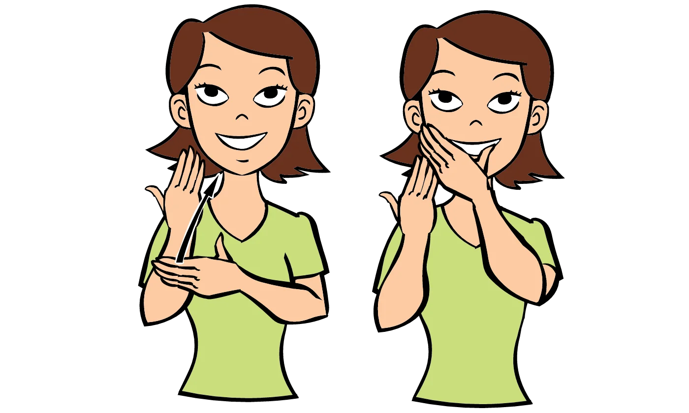
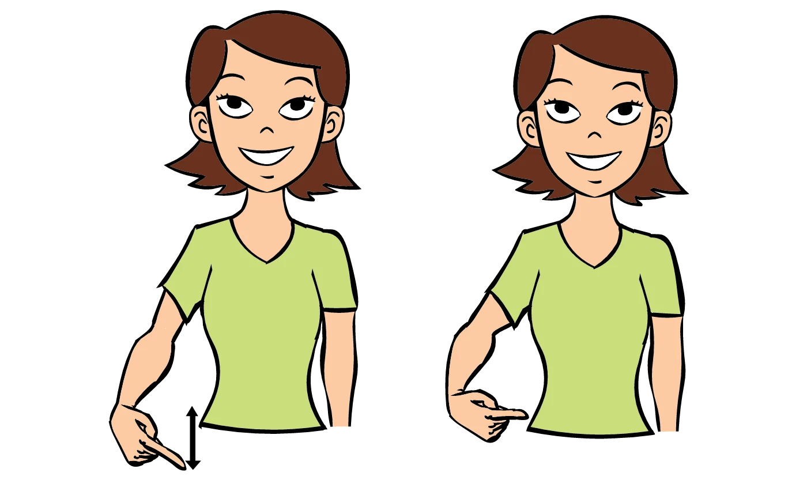
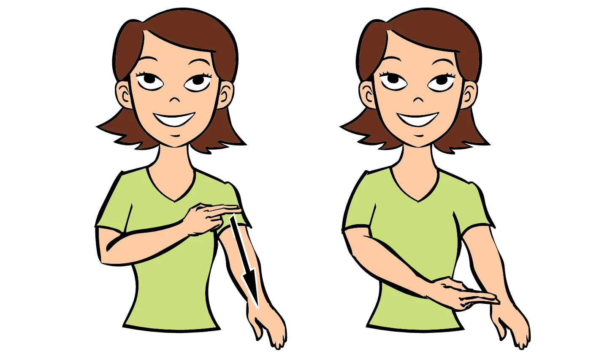
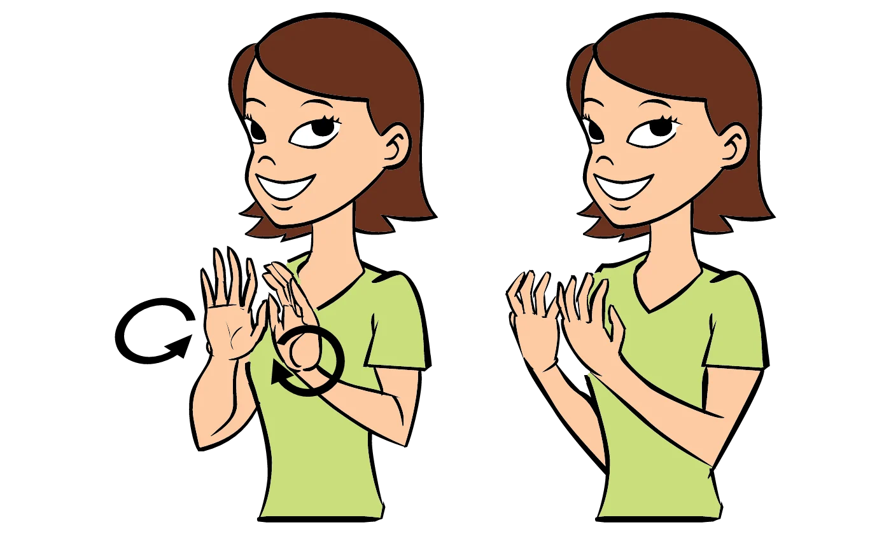
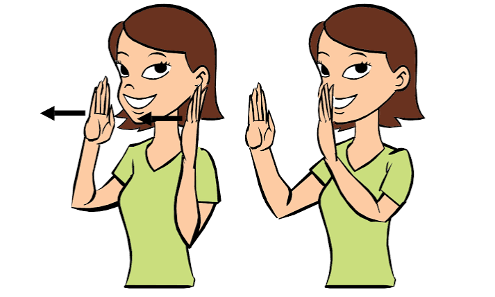

MÓDULO 3
O que aprenderemos nesse módulo?
Nesse módulo, o aluno aprenderá sobre as coisas mais básicas do ASL para se comunicar com alguém, vendo sobre animais, cores, comidas, membros da família e números.
City places
1. Introdução e Construção
O objetivo é apresentar lugares comuns da cidade em inglês e ASL, ampliando o vocabulário e desenvolvendo a compreensão dos espaços públicos.
Apresentação dos Lugares: Introduza palavras como School, Hospital, Park e Library, demonstrando os sinais correspondentes.
Repetição Orientada: Incentive a reprodução dos sinais e a identificação de suas características.
Associação com Funções: Relacione cada lugar às atividades realizadas nele.
Reforço Visual: Utilize mapas ilustrados e imagens de diferentes espaços da cidade.
2. Consolidação e Prática
Desenvolva atividades de identificação de lugares, associação entre imagens e sinais e exercícios de escolha da resposta correta. Incentive a construção de frases simples, como "I go to school", ampliando a aplicação do vocabulário
School
Hospital
Hotel
Bakery
Feelings and emotions
1. Introdução e Construção
Nesta fase, o objetivo é desenvolver o reconhecimento e a expressão de sentimentos em inglês e ASL, estimulando a comunicação emocional.
Apresentação das Emoções: Introduza Happy, Sad, Angry e Scared, demonstrando seus sinais.
Repetição Orientada: Incentive a criança a reproduzir os sinais, observando também as expressões faciais.
Associação com Expressões: Utilize ilustrações de personagens demonstrando diferentes emoções.
Contextualização: Apresente situações cotidianas que ajudem a compreender os sentimentos trabalhados.
2. Consolidação e Prática
Utilize jogos de identificação de emoções, associação entre expressões faciais e sinais e atividades de memória. Incentive a construção de frases simples, como "I am happy", promovendo a expressão de sentimentos.
Happy
Sad
Love
Anger
Body parts

1. Introdução e Construção
O objetivo é ampliar o vocabulário relacionado às partes do corpo humano, associando palavras em inglês, representações visuais e sinais em ASL.
Apresentação das Partes: Introduza Head, Hand, Arm e Leg, demonstrando os sinais correspondentes.
Repetição Orientada: Incentive a criança a reproduzir os sinais e identificar as partes do próprio corpo.
Associação Visual: Utilize ilustrações do corpo humano para contextualizar o vocabulário.
Reforço Visual: Apresente cartões que relacionem as partes do corpo às palavras e aos sinais.
2. Consolidação e Prática
Realize atividades de identificação das partes do corpo, jogos de associação e exercícios de memória. Incentive a criança a relacionar as imagens aos sinais e utilizar o vocabulário em pequenas atividades comunicativas.

Hand
Leg


Arm
Hair
School
1. Introdução e Construção
Nesta etapa, o objetivo é apresentar palavras relacionadas ao ambiente escolar em inglês e ASL, desenvolvendo a comunicação sobre situações presentes na rotina de estudos.
Apresentação e Vocabulário: Introduza palavras como Teacher, Student, Book e Pencil, demonstrando os sinais correspondentes.
Repetição Orientada: Incentive a reprodução dos sinais e a observação de suas características.
Associação com Ambiente: Utilize imagens de salas de aula, materiais escolares e situações de aprendizagem.
Contextualização: Relacione as palavras apresentadas às atividades realizadas no ambiente escolar.
2. Consolidação e Prática
Proponha jogos de associação entre materiais escolares e sinais, atividades de identificação visual e exercícios de memória. Incentive a formação de frases simples, como "This is my book", promovendo a utilização prática do vocabulário aprendido.

Classroom
Hallway

Pencil
Eraser
Technologies

1. Introdução e Construção
Nesta etapa, o objetivo é ampliar o vocabulário relacionado à tecnologia, desenvolvendo a capacidade de reconhecer e utilizar sinais associados a ferramentas digitais.
Apresentação do Vocabulário: Introduza palavras como Computer, Phone, Internet e Tablet, demonstrando seus sinais em ASL.
Repetição Orientada: Incentive a reprodução dos sinais, observando a precisão dos movimentos.
Associação com o Cotidiano: Utilize imagens de dispositivos e situações em que a tecnologia está presente.
Contextualização: Relacione os termos apresentados às suas funções, estimulando a compreensão de seu significado.
2. Consolidação e Prática
Proponha jogos de associação, identificação de dispositivos e exercícios de memória. Incentive a utilização do vocabulário em frases simples em inglês, relacionando palavras, imagens e sinais.
Internet
Smartphone
Computer
Robot